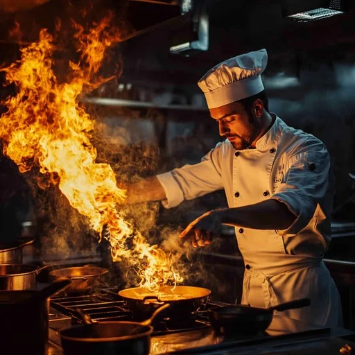
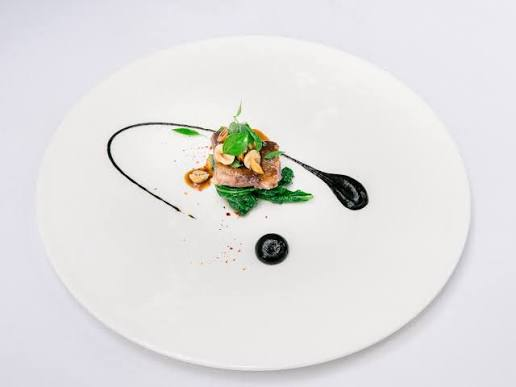

About BanglaGhor
Our Story
Bangla Bistro was founded in 2010 by Chef Rahman Ahmed, a third-generation cook from Old Dhaka's famous Nawab family. What started as a small 10-table restaurant has grown into one of the most beloved Bangladeshi restaurants in the city. Our journey began with a simple mission: to share the authentic taste of Bangladesh with the world.
Over the past 14 years, we have served over 500,000 customers and won numerous awards for our commitment to authenticity and quality. Our restaurant has been featured in national food magazines and has become a gathering place for the Bangladeshi diaspora and food enthusiasts alike. We take pride in preserving traditional recipes while embracing modern culinary techniques.



